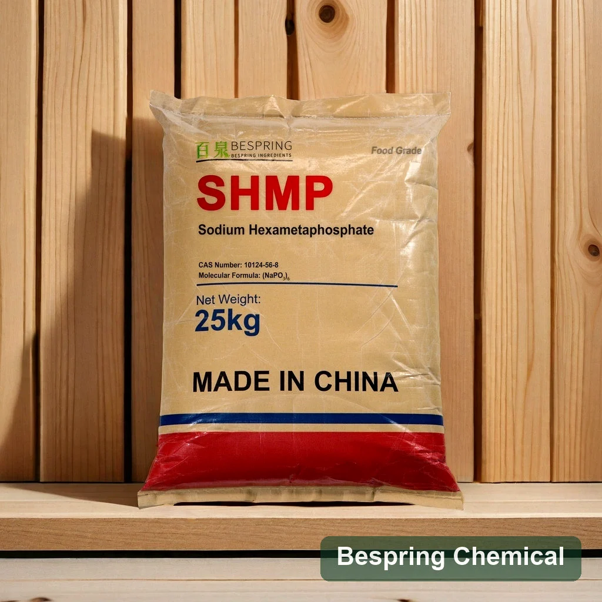
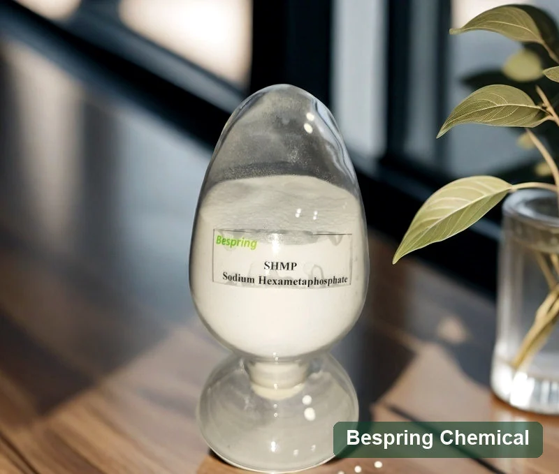
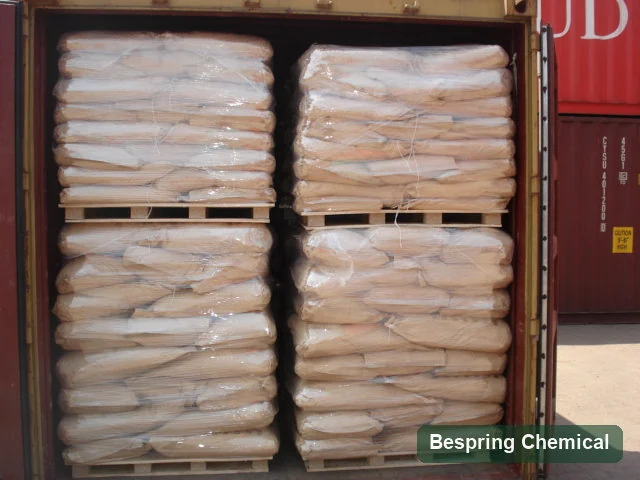

(NaPO3)6
Useful as a familiar nominal representation, but it can incorrectly imply that commercial SHMP is one discrete cyclic hexamer with a single molecular weight.
Food phosphate · SHMP · White powder

Product image · confirm grade and packaging when ordering
Include your required standard, quantity, pallet preference, destination and application for an efficient review.
Defined specificationEight quality parameters listed
25 kg packagingKraft paper outer bag with inner PE bag
24-month shelf lifeFrom manufacturing date under stated storage
Container loadingWith or without pallets
Product overview
Food grade sodium hexametaphosphate is a water-soluble, glassy sodium polyphosphate supplied here as a white powder. JECFA treats sodium hexametaphosphate as a synonym within the broader sodium polyphosphates, glassy identity rather than as one pure six-unit molecule.
Commercial SHMP may therefore differ in chain-length distribution, sodium oxide-to-phosphorus pentoxide ratio, P2O5, inactive phosphate and solution pH. Buyers should qualify the offered source against the intended standard and process—not approve it from the name “SHMP” alone.
Polyphosphate identity
“Hexametaphosphate” is a longstanding commercial name, but the food-additive reference describes a distribution of linear polyphosphate chains.
Useful as a familiar nominal representation, but it can incorrectly imply that commercial SHMP is one discrete cyclic hexamer with a single molecular weight.
JECFA describes amorphous, water-soluble linear chains, generally represented as (NaPO3)x with terminal groups. Graham’s salt, commonly called SHMP, has an approximate x of 13–18.
Review identity, P2O5, inactive phosphate, solution pH, contaminants, physical form and any source-specific chain-distribution information relevant to performance.
Formulation value
SHMP can perform several functions, but the effect depends on chain distribution, solution chemistry, the complete recipe, use level, raw materials and process conditions.
Complexes certain metal ions that can otherwise affect product appearance, texture or process stability.
May support protein–fat–water organization in validated systems such as selected processed-cheese formulations.
Can influence dispersion and finished texture, subject to formulation trials and the complete phosphate system.
Commercial grades differ in pH and phosphate distribution, which can affect handling and formulation response.
Typical application areas
Suitability, dosage and label declaration must be reviewed against the finished formulation and the regulations of both manufacturing and destination markets.
SHMP is evaluated in selected protein and dairy formulations where sequestration, emulsification, pH control and texture management are relevant.
It may be used as a functional phosphate in permitted noodle, vegetable, cream, whitening and gelled dessert applications.
Product specification
The following limits are commercial references for the offered grade. They are not a universal food-grade SHMP standard; the signed contract specification, agreed methods and batch certificate of analysis govern an order.
Swipe or use the keyboard to read all columns
| Test item | Specification | Unit / condition |
|---|---|---|
| Total phosphate as P2O5 | ≥ 68.0 | % |
| Inactive phosphate as P2O5 | ≤ 7.5 | % |
| Water-insoluble matter | ≤ 0.06 | % |
| Iron (Fe) | ≤ 200 | ppm |
| Arsenic | ≤ 3 | ppm |
| Heavy metals (as Pb) | ≤ 10 | ppm |
| pH | 5.8–6.5 | 1% solution |
| Fluoride | ≤ 30 | ppm |
Specification notice: Confirm analytical methods, sampling rules, food-additive identity and acceptance criteria before contracting. A batch COA should be reviewed against the agreed purchase specification.
The FAO/WHO JECFA monograph for sodium polyphosphates, glassy lists sodium hexametaphosphate and Graham’s salt as synonyms under INS 452(i). It describes a P2O5 assay range of 60–71% for the broader identity and functional uses as emulsifier, sequestrant and texturizer. The U.S. FDA inventory separately lists sodium hexametaphosphate under CAS 10124-56-8. These references support identity context; they do not certify the Bespring supply or establish permitted use in every market.
Grade selection
SHMP performance and approval depend on more than total phosphate. Compare the offered source across the parameters that affect identity, formulation and compliance.
Confirm total phosphate, reporting basis and method. The commercial ≥68.0% limit sits within the broader JECFA identity range but remains source-specific.
Review the commercial ≤7.5% limit and method because hydrolysis products and phosphate distribution can help distinguish commercial grades.
Confirm pH at the stated concentration, dissolution behavior, clarity and particle form against the actual processing sequence.
Align fluoride, arsenic, lead/heavy-metal and any destination-specific limits; do not infer compliance from “food grade” wording alone.
Validate sequestration, emulsification, dispersion and texture response in the complete recipe, including other phosphates and salts.
Request the current signed specification, batch COA, SDS and applicable quality or regulatory documents for the exact source.
This page is for food-grade qualification and permitted food applications. For ore, slurry and mineral-processing testwork, use the dedicated SHMP for mining and mineral processing page. The two grades and approval processes should not be treated as interchangeable.
Packing & logistics
Final loading is subject to container limits, route, pallet dimensions and shipping confirmation.
Packaging and logistics references
These photographs show SHMP packaging, a labeled powder sample and a reference container-loading view.


Storage & shelf life
Food-additive identity
Codex JECFA lists sodium hexametaphosphate as a synonym under sodium polyphosphate, glassy (INS 452(i)). That identity specification is not a list of universally permitted food categories or use levels. Confirm the offered source, applicable additive name, food category, maximum level, labeling and documentation under the manufacturing and destination-market rules.
Phosphate decision path
Use these pages to separate product identity from application selection and build a technically useful sourcing brief.
Buyer questions
It is used in permitted food formulations as a sequestrant, pH regulator, quality improver and functional phosphate. Application areas include selected processed cheese, meat, seafood, vegetables, noodles, cream products and dessert gels.
The commercial reference specifies total phosphate as P2O5 at 68.0% minimum and inactive phosphate as P2O5 at 7.5% maximum.
Codex JECFA lists sodium hexametaphosphate as a synonym under sodium polyphosphate, glassy (INS 452(i)). Because commercial identity and CAS references can vary, buyers should confirm the applicable specification and destination-market designation.
Not generally. JECFA describes sodium polyphosphates, glassy as distributions of linear chains and notes that Graham’s salt, commonly called sodium hexametaphosphate, has an approximate chain length of 13–18. Buyers should qualify the commercial grade rather than rely on the shorthand formula alone.
Standard packing is a net 25 kg kraft paper outer bag with an inner PE bag. Reference loading is 24 MT per 20GP without pallets or 22 MT with pallets, subject to final shipment confirmation.
Provide the required food standard, quantity, packaging and pallet preference, destination port, intended application and requested delivery date.
Ask the sales team for the current specification, TDS, SDS, applicable quality documents, batch COA format and sample availability. State the application and destination market so the relevant information can be reviewed.
Start a sourcing conversation
Share the commercial and technical details that affect product selection, documentation, container loading and landed cost.
Tell us your grade and destination market so we can confirm which documents are available for your order.
An external reference is not a batch certificate or a Bespring product specification.